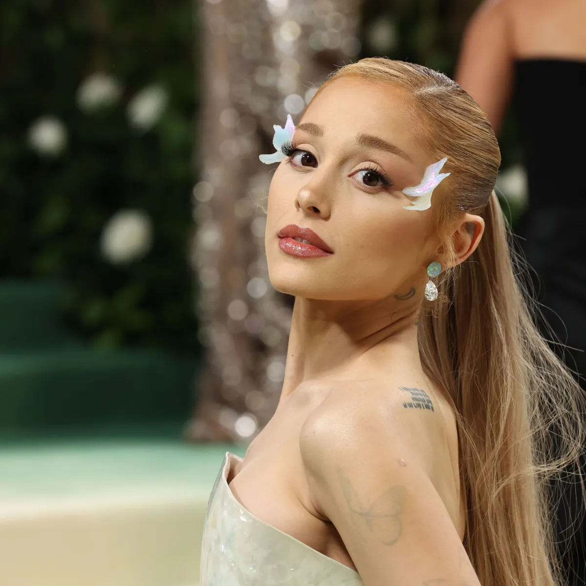
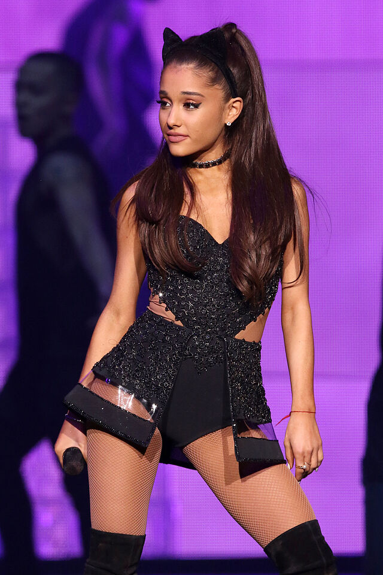

A nossa empresa é o paraíso para os fãs da Ariana Grande! Oferecemos uma variedade incrível de produtos relacionados à artista, desde itens de moda inspirados em seus looks icônicos até colecionáveis exclusivos que capturam a essência de sua carreira.
Você pode encontrar roupas e acessórios que refletem seu estilo único, como camisetas, moletons e bijuterias. Também temos uma seleção de produtos de beleza, incluindo fragrâncias e maquiagens que trazem um toque da diva para o seu dia a dia. Para os colecionadores, disponibilizamos álbuns de música, vinis raros e merchandise autografado, além de itens de decoração que celebram sua trajetória.
Nossa missão é proporcionar aos fãs uma experiência única e acessível, onde eles possam expressar seu amor pela Ariana Grande através de produtos que ressoam com sua arte e personalidade. Venha conferir nossas novidades e se conectar ainda mais com a sua ídola!
A missão da nossa empresa é celebrar e compartilhar a paixão pela música e pelo estilo da Ariana Grande, oferecendo produtos que inspirem e conectem os fãs à sua ídola. Acreditamos que cada item que vendemos não é apenas um produto, mas uma forma de expressão e uma celebração da cultura pop.
Nosso compromisso é garantir qualidade e exclusividade em cada produto, proporcionando aos fãs uma experiência autêntica e memorável. Queremos criar um espaço onde os admiradores possam encontrar tudo o que amam sobre a Ariana Grande, desde roupas e acessórios até itens colecionáveis, sempre com um toque especial que reflete sua essência.
Estamos dedicados a promover um ambiente inclusivo e acolhedor, onde todos os fãs se sintam valorizados e parte de uma comunidade unida pelo amor à música. Nossa missão é, acima de tudo, cultivar essa conexão única e proporcionar momentos de alegria e inspiração através da arte da Ariana Grande.
A visão da nossa empresa é ser a principal referência para fãs da Ariana Grande em todo o mundo, criando um espaço onde a paixão pela música e pela cultura pop se encontram de forma vibrante e autêntica. Sonhamos em construir uma comunidade global unida, onde os admiradores possam se conectar, compartilhar experiências e celebrar a trajetória da artista.
Queremos ir além de uma simples loja; aspiramos a ser um ponto de encontro que promova a criatividade, a diversidade e a expressão pessoal. Acreditamos que cada fã tem uma história única para contar, e nossa visão é oferecer produtos que não apenas representem a Ariana, mas que também inspirem cada um a expressar sua individualidade.
Buscamos constantemente inovar e expandir nosso portfólio, trazendo novidades que capturem a essência da artista e ressoem com os valores dos fãs. Com um foco inabalável na qualidade e na experiência do cliente, nossa visão é criar momentos memoráveis que unam todos em torno do amor pela música e pela arte de Ariana Grande.